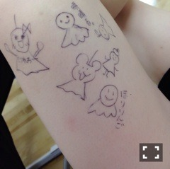
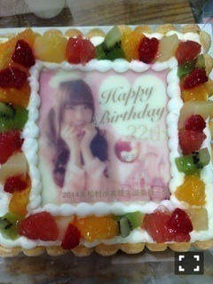

2014/0829Fri足にてるてるっ(o・ ・o)
こんばんごっ(o・・o)
さゆりんごっ(o・・o)
お誕生日のコメント沢山ありがとうございます！
ちょっとずつ読ませてもらいます♡
明日はついに明治神宮球場！
全国ツアーのラストです！
雨かな～
みんな来てくれるかな～
不安に思ってたら
まっちゅんの足に
続々とてるてる坊主さんがっ♡

みんなレッスンの合間に書いてくれたの♡♡

みえるかな～
左足♡
右足♡

どれが誰のてるてる坊主さんか
わかる～♡？
これで明日晴れるといいな～♡
あ、でも晴れたら
日焼けしちゃうから
曇りがいいな～♡♡笑
よーし！がんばりんごだぷー♡
2014/08/29 23:54｜個別ページ｜コメント(1341)
2014/0827Wedお誕生日っ(o・・o)
松村沙友理、２２歳になりましたー！
すみません。ありがとうございます！
２２歳ですね。
２２歳....
２２歳より年上の皆さんは
２２歳の時 何をしていましたか？
２２歳より年下の皆さんは
どんな２２歳になってると
思いますか？
私は自分の思い描いていた姿と
全く違った人生を歩んでいます。
本当に人生とは面白いですね！
いま、こうやって乃木坂46にいるのは
本当に不思議です。
全国ツアーをやって
初日の大阪から人が入るか不安やったのに
いっぱいサイリウムとか
タオルとかうちわ持って
皆さん来てくれはって
いつの間にこんなに応援してもらえるようになったんやろって気持ちもあります。
本当に一公演ずつが大切で
一公演ずつに感謝の気持ちがいっぱいです。
福岡も
おいでシャンプーのときに
メンバー５人だけでミニ個別握手会を
やったときは
Zepp Fukuokaに朝1０人くらいしか
人がいなくて
めっちゃ焦ってたのに
いまは、福岡国際センターに
あんなに人が集まるなんて（ ; ; ）
本当にありがたいです（ ; ; ）
人生どうなるかわからない！
身をもって実感しております。
今年も握手会で生誕祭をしていただきました（ ; ; ）♡
まさか、今年もやってもらえるなんて（ ; ; ）
林檎に見立てたお花に
皆さんからのメッセージカードに
本当に全部が宝物です。
ケーキもいただきました！
ありがたいありがたい。
まいやんからお手紙も読んでもらって
ほんまに幸せ♡♡
家族のみんな
ファンのみなさん
スタッフさん
本当にいつもありがとうございます
ライブのスタッフさんが作ってくださりました。
本当に嬉しい
２２歳。どうなるかわからないけど
皆さんに支えられてることに感謝して
日々精進します。
どうぞこれからも
よろしくお願いします♡
2014/08/27 15:24｜個別ページ｜コメント(3258)
2014/0826Tue大阪桐蔭っ(o・・o)
第９６回全国高校野球選手権大会
大阪桐蔭が優勝しましたー！！
おめでとうございます！！！
本当に手に汗を握る試合で
ドキドキしっぱなしでした！！
三重高校も本当にお疲れ様でした！
あのスタンドまで巻き込んでしまう
一体感にすごく感動しました！
甲子園が終わると夏の終わりって感じがしますね。
今年も沢山の感動をありがとうです！
優勝インタビューでの
大阪桐蔭の中村くんと福島くんの言葉に
涙がちょちょぎれました(´•̥ ω •̥` )
青春って素敵ですねー(´•̥ ω •̥` )
甲子園は終わりましたが
私たちの全国ツアーはまだまだ終わっていないので、
３０日の明治神宮まで
全力で駆け抜けます！！
私もステージで青春するぞー！！
明日も全力で！！
大阪桐蔭おめでとうございまーす*\(^o^)/*
2014/08/26 00:00｜個別ページ｜コメント(1169)
2014/0825Monなまどるどるっ(o・ ・o)
さゆりんごっ(o・・o)
甲子園はじまりましたねo(｀･д･´)o
今日、１７時から
生のアイドルが好き
やりますo(｀･д･´)o
ツアーの真っ最中なので
なにか裏話が聞けるかもしれないかもしれない。
風男塾さん
バクステ外神田一丁目さん
つりビットさん
よろしくお願いします♡♡
2014/0824Sun甲子園っ(o・・o)
こんばんごっ(o・・o)
さゆりんごっ(o・・o)
最近、色んなことがあって
何から書いたらいいのやらです。
とりあえず、ちょっとずつ(>_<)
全国ツアー
大阪、福岡、仙台
無事に終わりました\( ˆoˆ )/
来てくださったみなさん
ありがとうございます！！！
楽しい楽しい楽しい！！
すっごく楽しいです！！
セットリストとかは
まだ言えないのですが
ほんまに楽しい\( ˆoˆ )/
なんか毎年、メンバーみんな成長してるな～って
一番身近にいてほんまに感じます！
いっぱい皆で悩んで指摘しあって
なんか楽しい\( ˆoˆ )/
毎回、反省もあるけど
怒られたらちょっとシュンってなるけど
楽しい\( ˆoˆ )/
名古屋も神宮も皆で頑張ります！
行こうか迷ってる人は
絶対に来なきゃ損よ\( ˆoˆ )/
あー。
早く皆さんから直接
感想聞きたい！！
ライブと握手会が
交互にあったらいいのにね(´｡･-･｡｀)
やっぱり、来てくれはった方の
意見を直接聞きたいのよ！
どこが良かった～とか
あそこはもっとこうした方がいい！とか(>_<)♡♡
名古屋も神宮も
後悔ないように頑張ります！
タオルもうちわも全部みえてるよ\( ˆoˆ )/
ほんまに嬉しいです♡
さゆりーんって呼んでくれるのも
ほんまに嬉しい！！
ほんまに感謝して
頑張ります！！！
そして、私の母校
大阪桐蔭がついに
甲子園の決勝に進出しましたo(*´ヮ｀*)o
すごく誇りです！！
私たちもツアーの真っ最中なので
選手の皆さんのパワーと輝きをみて
力を貰ってます！！
明日がついに決勝です！
結果はどうなるかわかりませんが
皆の勇姿を目に焼き付けようと思います！
大阪桐蔭を応援して！！なんて
言わないので
ぜひ、皆さんも甲子園みてくださいね～o(*´ヮ｀*)o
絶対、感動して泣いちゃう(´•̥ ω •̥` )
青春や～(´•̥ ω •̥` )
ツアーも青春やけどねo(*´ヮ｀*)o
私の高校時代の友人も
みんな甲子園に駆けつけるみたいで
ちょっと羨ましい(>_<)笑
私は東京でお仕事がんばります！
大阪桐蔭がんばれ～！！！
2014/08/24 22:12｜個別ページ｜コメント(1033)